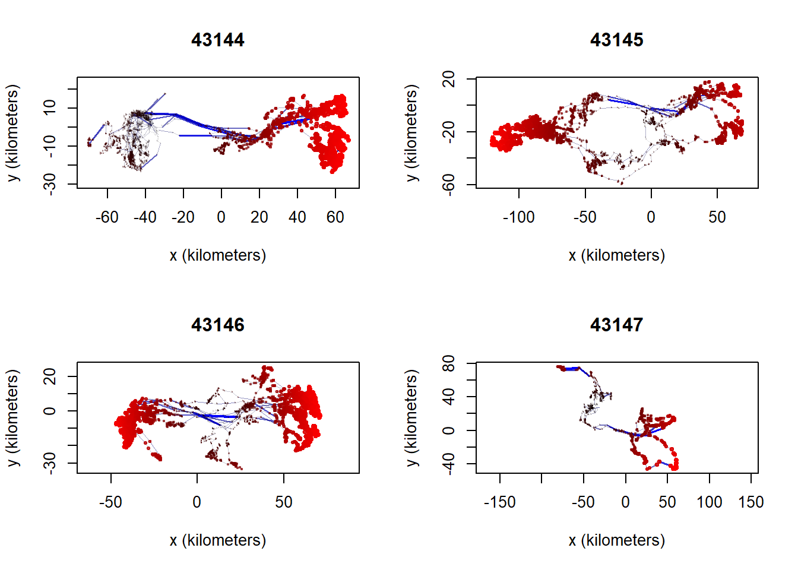
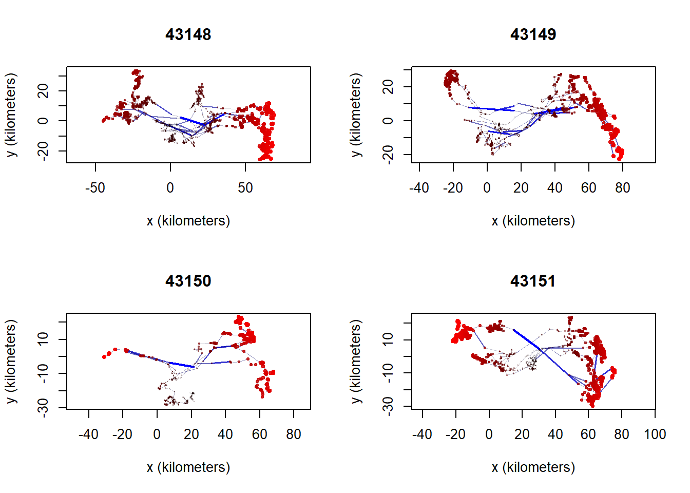
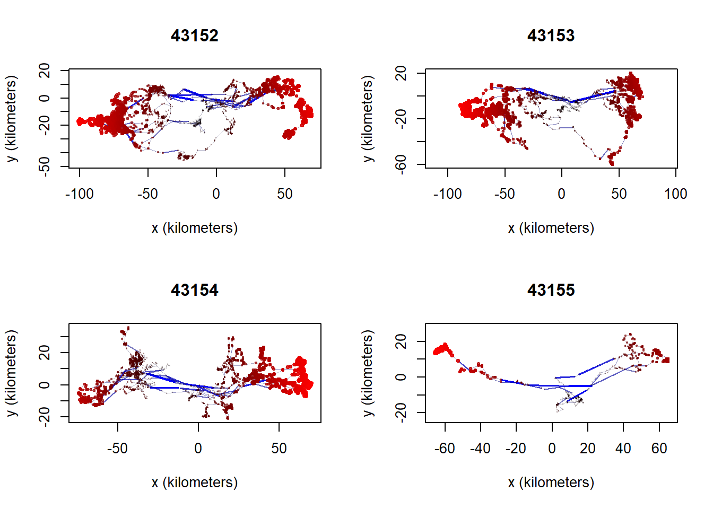
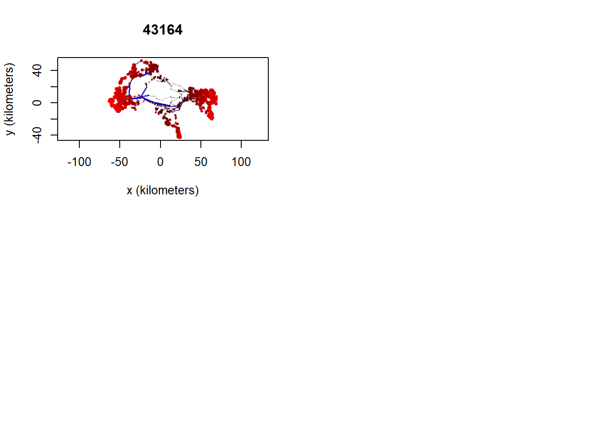
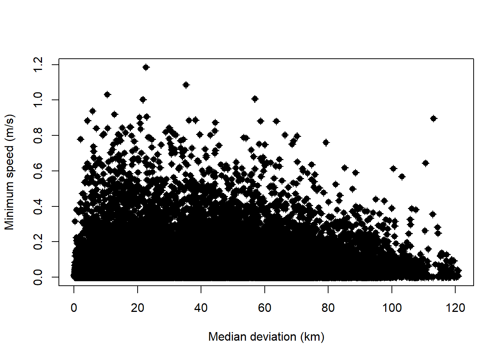

library(sf)
library(ctmm)
library(tidyverse)
library(adehabitatHR)
ytdir <- "H:/Shared drives/Little Rancheria/Yukon/"
bcdir <- "H:/Shared drives/Little Rancheria/BC/"Caribou data
Introduction
The first step of the analysis is to explore the Little Rancheria telemetry data and generate some minimum convex polygons (MCPs). Our objectives are to:
Clean YT gps data, remove outliers, create seasonal KDEs
Read raw collar data and format as movebank data
Read Little Rancheria telemetry data
Summarize number of collars, years, and locations
Select subset of data for further analysis i.e., drop older locations without IDs
Plot the distribution of locations by year for subset of data
Map the distribution of locations by Collar ID
Create 100 MCP for all locations and buffer by 5km
Yukon data
Read caribou collar data and save to local drive
We start by reading the telemetry data from the csv file and converting it to a simple feature point file. To do this we read the GPS locations, convert them to an sf object, create long/lat coordinates, and project to the standard Yukon Albers projection (EPSG:3578). We also created a new field called year to allow us to filter observations by year. A number of older locations are not associated with a Collar_ID. We will exclude them for now. Finally, we save the gps coordinates in a geopackage file.
raw <- st_read(paste0(ytdir, "LRCH_2020-2024_GPSCollar_points.shp"), quiet=TRUE) |>
st_drop_geometry()
write_csv(raw, '../data/yt/raw_data.csv')Read locations and convert to simple features (sf object)
gps <- read.csv('../data/yt/gps.csv') |>
st_as_sf(coords=c('longitude', 'latitude'), crs=4326) |>
st_transform(3578)
st_write(gps, '../data/yt_caribou.gpkg', 'gps', delete_layer=TRUE)Deleting layer `gps' using driver `GPKG'
Writing layer `gps' to data source `../data/yt_caribou.gpkg' using driver `GPKG'
Writing 90864 features with 3 fields and geometry type Point.Convert to movebank-ish format and save
gps <- raw |> dplyr::select(timestamp, long, lat, tag_ident) |>
rename(longitude=long, latitude=lat, ID=tag_ident)Check that date range is correct
max(gps$timestamp)[1] "2024-03-14 21:17:51"min(gps$timestamp)[1] "2020-11-03 19:19:10"Check for duplicated locations
summary(duplicated(gps)) Mode FALSE
logical 90864 Convert ‘timestamp’ column to Date class to separate seasons
gps <- gps |> mutate(date = as.Date(timestamp))
glimpse(gps)Rows: 90,864
Columns: 5
$ timestamp <chr> "2020-11-06 19:10:39", "2020-11-07 01:07:00", "2020-11-07 07…
$ longitude <dbl> -129.2876, -129.3327, -129.3022, -129.3021, -129.3146, -129.…
$ latitude <dbl> 60.24530, 60.19127, 60.17469, 60.17254, 60.14960, 60.14822, …
$ ID <chr> "43163", "43163", "43163", "43163", "43163", "43163", "43163…
$ date <date> 2020-11-06, 2020-11-07, 2020-11-07, 2020-11-07, 2020-11-07,…Split data into seasons
Selected date ranges
The seasonal date ranges are the same as those initially used for the Klaza and Clear Creek herds (Maegan, personal communication). These should be revisited with regional biologists and revised as necessary.
Code
# Early winter: Oct 21 - Jan 31
ew2020_start <- as.Date("2019-10-21")
ew2020_end <- as.Date("2020-01-31")
ew2021_start <- as.Date("2020-10-21")
ew2021_end <- as.Date("2021-01-31")
ew2022_start <- as.Date("2021-10-21")
ew2022_end <- as.Date("2022-01-31")
ew2023_start <- as.Date("2022-10-21")
ew2023_end <- as.Date("2023-01-31")
ew2024_start <- as.Date("2023-10-21")
ew2024_end <- as.Date("2024-01-31")
# Late winter: Feb 1 - Apr 15
lw2020_start <- as.Date("2020-02-01")
lw2020_end <- as.Date("2020-04-15")
lw2021_start <- as.Date("2021-02-01")
lw2021_end <- as.Date("2021-04-15")
lw2022_start <- as.Date("2022-02-01")
lw2022_end <- as.Date("2022-04-15")
lw2023_start <- as.Date("2023-02-01")
lw2023_end <- as.Date("2023-04-15")
lw2024_start <- as.Date("2024-02-01")
lw2024_end <- as.Date("2024-04-15")
# Summer: June 16 - Sept 14
su2020_start <- as.Date("2020-06-16")
su2020_end <- as.Date("2020-09-14")
su2021_start <- as.Date("2021-06-16")
su2021_end <- as.Date("2021-09-14")
su2022_start <- as.Date("2022-06-16")
su2022_end <- as.Date("2022-09-14")
su2023_start <- as.Date("2023-06-16")
su2023_end <- as.Date("2023-09-14")
su2024_start <- as.Date("2024-06-16")
su2024_end <- as.Date("2024-09-14")
# Fall rut: Sept 15 - Oct 20
fr2020_start <- as.Date("2020-09-15")
fr2020_end <- as.Date("2020-10-20")
fr2021_start <- as.Date("2021-09-15")
fr2021_end <- as.Date("2021-10-20")
fr2022_start <- as.Date("2022-09-15")
fr2022_end <- as.Date("2022-10-20")
fr2023_start <- as.Date("2023-09-15")
fr2023_end <- as.Date("2023-10-20")
fr2024_start <- as.Date("2024-09-15")
fr2024_end <- as.Date("2024-10-20")
# Create new attribute called season
gps <- gps %>%
mutate(
season=case_when(
(date >= ew2020_start & date <= ew2020_end) |
(date >= ew2021_start & date <= ew2021_end) |
(date >= ew2022_start & date <= ew2022_end) |
(date >= ew2023_start & date <= ew2023_end) |
(date >= ew2024_start & date <= ew2024_end) ~ 'earlywinter',
(date >= lw2020_start & date <= lw2020_end) |
(date >= lw2021_start & date <= lw2021_end) |
(date >= lw2022_start & date <= lw2022_end) |
(date >= lw2023_start & date <= lw2023_end) |
(date >= lw2024_start & date <= lw2024_end) ~ 'latewinter',
(date >= su2020_start & date <= su2020_end) |
(date >= su2021_start & date <= su2021_end) |
(date >= su2022_start & date <= su2022_end) |
(date >= su2023_start & date <= su2023_end) |
(date >= su2024_start & date <= su2024_end) ~ 'summer',
(date >= fr2020_start & date <= fr2020_end) |
(date >= fr2021_start & date <= fr2021_end) |
(date >= fr2022_start & date <= fr2022_end) |
(date >= fr2023_start & date <= fr2023_end) |
(date >= fr2024_start & date <= fr2024_end) ~ 'fallrut',
.default = 'other'), date=NULL)Check data
glimpse(gps)Rows: 90,864
Columns: 5
$ timestamp <chr> "2020-11-06 19:10:39", "2020-11-07 01:07:00", "2020-11-07 07…
$ longitude <dbl> -129.2876, -129.3327, -129.3022, -129.3021, -129.3146, -129.…
$ latitude <dbl> 60.24530, 60.19127, 60.17469, 60.17254, 60.14960, 60.14822, …
$ ID <chr> "43163", "43163", "43163", "43163", "43163", "43163", "43163…
$ season <chr> "earlywinter", "earlywinter", "earlywinter", "earlywinter", …Number of locations per season
table(gps$season)
earlywinter fallrut latewinter other summer
30041 7465 20191 13773 19394 Save GPS data with seasons
write_csv(gps, '../data/yt/gps.csv')Check for outliers
Outlier plots: y distance (km) vs x distance (km) for each individual caribou.
par(mfrow=c(2,2))
out = outlie(data = tel, plot = TRUE, by = 'd')






Outlier plot: minimum speed (m/s) vs. median deviation (km) for all caribou individuals.
par(mfrow=c(1,1))
plot(out)
BC data
Preparing telemetry data
We start by reading the telemetry data from the csv file and converting it to a simple feature point file. To do this we read the GPS locations, convert them to an sf object, create long/lat coordinates, and project to the standard Yukon Albers projection (EPSG:3578). We also created a new field called year to allow us to filter observations by year. A number of older locations are not associated with a Collar_ID. We will exclude them for now. Finally, we save the gps coordinates in a geopackage file.
gps_all <- read_csv(paste0(bcdir, 'Telemetry_LittleRancheria.csv')) |>
st_as_sf(coords=c('Longitude', 'Latitude'), crs=4326) |>
mutate(...1=NULL, Year=substr(Fix_Date,1,4)) |>
st_transform(3578)
st_write(gps_all, '../data/bc/caribou_ranges.gpkg', 'locations', delete_layer=TRUE)Select and save locations without IDs. These are older non-gps locations that may be of value for analysing change at the population level.
gps_na <- filter(gps_all, is.na(Collar_ID))
st_write(gps_na, '../data/bc/caribou_ranges.gpkg', 'locations_without_id', delete_layer=TRUE)Select and save locations with IDs.
gps <- filter(gps_all, !is.na(Collar_ID))
st_write(gps, '../data/bc/caribou_ranges.gpkg', 'locations_with_id', delete_layer=TRUE)Locations by caribou by year
We start by viewing the number of locations by caribou and year. Caribou without a Collar_ID were monitored between 1996-2001. For now we will focus exclusively of caribou with a Collar_ID.
Caribou with Collar IDs
table(gps$Year)Caribou without Collar IDs
table(gps_na$Year)Locations by year for caribou with Collar_ID
table(gps$Collar_ID, gps$Year)Locations by year
We can also see the distribution of all collar locations using the facet_wrap function of ggplot2. Based on the plot and the previous table we can see that there are a lot more locations between 2021-2023.
ggplot(data=gps) +
geom_sf() +
facet_wrap(facets=vars(Year))View all gps locations
The following map shows the distribution of locations for caribou with and without a Collar ID.
gps_all <- mutate(gps_all, Collar_ID2=ifelse(is.na(Collar_ID), "No", "Yes"))
ggplot() +
geom_sf(data=gps_all, aes(color=as.factor(Collar_ID2)), size=0.50) +
scale_color_discrete(name="Collar ID")Create minimum convex polygons
Create minimum convex polygons:
- for each caribou with greater than four locations
- for all caribous (dissolved) and add a 5km buffer
The second MCP will be used to define the study area.
mcp <- NULL
imcp <- NULL
for (i in unique(gps$Collar_ID)) {
#cat('Processing', i, '\n'); flush.console()
gps1 <- filter(gps, Collar_ID==i) %>%
dplyr::select(Collar_ID)
if (nrow(gps1)>=5) {
gps1.sp <- as_Spatial(gps1)
gps1.mcp <- mcp(gps1.sp, percent=100)
mcp1 <- st_as_sf(gps1.mcp)
if (i==gps$Collar_ID[1]) {
mcp <- mcp1
imcp <- mcp1
} else {
mcp <- st_union(mcp, mcp1)
imcp <- rbind(imcp, mcp1)
}
}
}
st_write(mcp, '../data/bc/caribou_ranges.gpkg', 'mcp', delete_layer=TRUE)
st_write(imcp, '../data/bc/caribou_ranges.gpkg', 'imcp', delete_layer=TRUE)Add 5-km buffer to sum of MCPs
mcp5k <- st_buffer(mcp, 5000) %>%
dplyr::select(id) %>%
mutate(id = 'MCP + 5k') %>%
st_transform(3578)
st_write(mcp5k, '../data/bc/caribou_ranges.gpkg', 'mcp_buff5k', delete_layer=TRUE)Plot individual MCPs
Here we plot 100% minimum convex polygons (MCPs) for all caribou with Collar IDs.
ggplot() +
geom_sf(data=imcp, fill=NA)Plot combined MCP + 5k buffer
ggplot() +
geom_sf(data=gps, aes(color=as.factor(Collar_ID)), size=0.50) +
geom_sf(data=mcp5k, fill=NA) +
scale_color_discrete(guide="none")